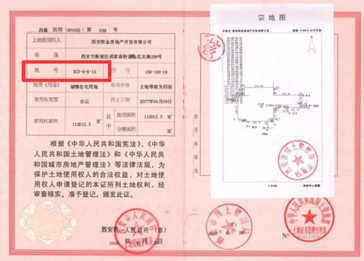
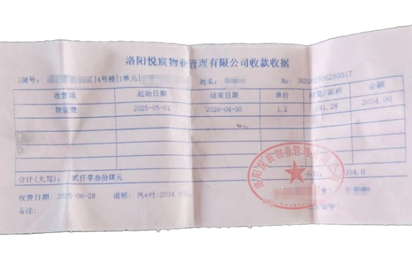
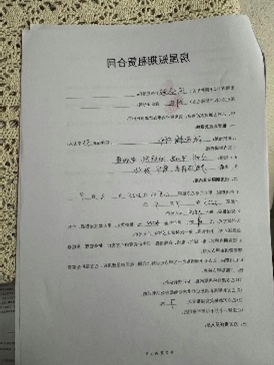
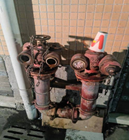
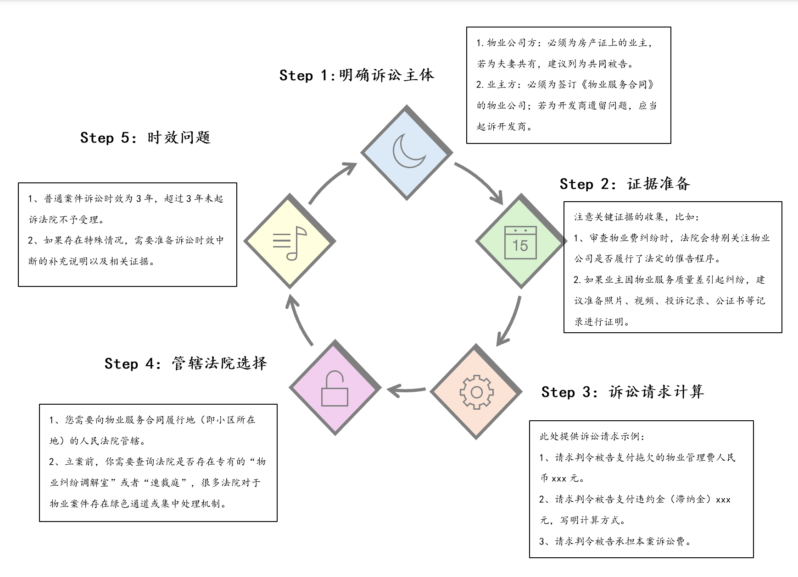

例：长沙市普通商品住宅服务分项目分等级基准价标准
| 服务项目 | 一级 | 二级 | 三级 | 四级 | 备注 |
|---|---|---|---|---|---|
| 综合管理服务 | 0.15 | 0.3 | 0.45 | 0.6 | 每平方米建筑面积月收费基准价（元）；绿化为每平方米绿地面积年收费基准价（元） |
| 公共区域清洁卫生服务 | 0.1 | 0.2 | 0.34 | 0.4 | |
| 公共区域秩序维护服务 | 0.15 | 0.25 | 0.42 | 0.5 | |
| 公共区域绿化日常养护服务 | 2 | 3 | 4.5 | 6.5 | |
| 公共部位、共用设备日常运行、保养、维修服务 | 详见文件 | 详见文件 | 详见文件 | 详见文件 | 详见文件 |
数据来源：长沙市发展与改革委员会

一、基础依据证据
二、物业服务不达标的具体证据

证明“侵权后果及诉求”的证据：
损失计算依据：如广告位、场地租赁的市场价格评估报告、同类小区的收益情况等，用于证明物业公司行为的获利情况或对您及全体业主造成的损失。
| 证据类别 | 具体内容 | 关键作用 |
|---|---|---|
| 主体与身份证明 | 你的身份证、房产证或购房合同。 | 证明你是小区业主，具备起诉的主体资格。 |
| 合同依据 | 与物业公司签订的 《物业服务合同》 、《停车服务协议》 或相关管理规约。 | 明确双方权利义务，是判断物业是否违约、违规的核心依据。 |
| 沟通与投诉记录 | 与物业、开发商就车位问题沟通的微信/短信记录、邮件、通话录音；向街道、社区、住建部门、12345热线投诉的记录及官方回复。 | 证明你已尝试过协商、投诉等前置程序，以及对方的态度和答复。 |
| 费用支付凭证 | 缴纳停车费、物业费的发票、收据、银行转账记录。 | 证明缴费事实及具体金额，用于计算可能的退款或损失。 |

如果协商无果，您可能需要通过诉讼解决纠纷。以下是民事诉讼的一般流程示意图，帮助您了解后续步骤：

注：具体流程可能因案件类型和法院安排略有不同，请以实际情况为准。